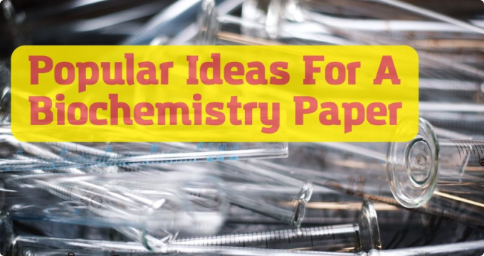

<div class="article-news">

    <div class="article-news__item">
        <picture class="article-news__picture">
            
        </picture>
        <div class="article-news__content">
            <h2 class="article-news__title">171 Original Biochemistry Research Topics</h2>
            <div class="article-news__info">
                <p class="article-news__name">Alexander Anderson</p>
                <div class="article-news__reactions">
                    <span class="article-news__date">21 Jun 2023</span>
                    <span class="article-news__like">14 likes</span>
                </div>
            </div>
            <p class="article-news__paragraph paragraph">
                Are you a student searching for original and captivating biochemistry research topics? Look no further!
                In this article, we present you with a comprehensive list of 171 free, unique, and thought-provoking
                biochemistry research topics. Whether you’re working on a thesis, dissertation, or class assignment,
                this list offers a wide range of interesting ideas to explore.
            </p>
            <p class="article-news__paragraph paragraph">
                Additionally, we provide a short guide on how to do research for a biochemistry paper quickly,
                equipping you with valuable tips and strategies to streamline your writing process. This guide will
                help you navigate the complexities of biochemistry writing, allowing you to produce a high-quality
                paper in no time. Get ready to embark on an exciting journey of scientific exploration and academic
                success!
            </p>
            <h3 class="article-news__title is-h3">What Is Biochemistry?</h3>
            <p class="article-news__paragraph paragraph is-bold">
                Biochemistry is the scientific discipline that explores the chemical processes and molecules that occur
                within living organisms. It focuses on the study of biological macromolecules, such as proteins,
                nucleic acids, carbohydrates, and lipids, and their roles in cellular functions, metabolism and the
                overall functioning of living systems.
            </p>
            <h4 class="article-news__title is-h4">How To Write An Excellent Biochemistry Paper</h4>
            <p class="article-news__paragraph paragraph">
                Before we get to the biochemistry research topics, we want to make sure you know how to conduct
                effective research for your paper. Make sure you follow these tips and tricks:
            </p>
            <ul class="article-news__list">
                <li class="article-news__list-item paragraph">
                    <span class="is-bold">Define your research question: </span>
                    Clearly state the main objective or question you want to address in your biochemistry paper.
                </li>
                <li class="article-news__list-item paragraph">
                    <span class="is-bold">Conduct a literature review: </span>
                    Review relevant scientific literature to understand existing knowledge and identify research gaps.
                </li>
                <li class="article-news__list-item paragraph">
                    <span class="is-bold">Utilize reputable sources: </span>
                    Gather information from trustworthy academic databases, peer-reviewed journals and reliable
                    scientific websites.
                </li>
            </ul>
            <h4 class="article-news__title is-h4">The Latest Biochemistry Research Topics</h4>
            <p class="article-news__paragraph paragraph">
                Stay up-to-date with cutting-edge advancements in biochemistry research with these engaging and
                thought-provoking topics. Check out our latest biochemistry research topics:
            </p>
            <ul class="article-news__list">
                <li class="article-news__list-item paragraph is-num">
                    1. CRISPR-Cas9 for precise genome editing in biochemistry
                </li>
                <li class="article-news__list-item paragraph is-num">
                    2. Epigenetics in cancer development and progression
                </li>
                <li class="article-news__list-item paragraph is-num">
                    3. Protein misfolding and neurodegenerative diseases
                </li>
            </ul>
            <h4 class="article-news__title is-h4">Amazing Biochemistry Thesis Topic Ideas</h4>
            <p class="article-news__paragraph paragraph">
                Dive into the fascinating world of biochemistry with these captivating thesis topics that will
                captivate readers and showcase your knowledge. Here are our amazing biochemistry thesis topic ideas:
            </p>
            <ul class="article-news__list">
                <li class="article-news__list-item paragraph is-num">
                    1. The role of biochemistry in personalized nutrition
                </li>
                <li class="article-news__list-item paragraph is-num">
                    2. Exploring the biochemical basis of addiction: Neurotransmitters and reward pathways
                </li>
                <li class="article-news__list-item paragraph is-num">
                    3. Biochemical mechanisms underlying the benefits of exercise on mental health
                </li>
            </ul>
            <div class="article-news__image">
                <picture class="article-news__picture">
                    
                </picture>
            </div>
            <h4 class="article-news__title is-h4">Popular Ideas For A Biochemistry Paper</h4>
            <p class="article-news__paragraph paragraph">
                Stand out among your peers with these popular and widely-discussed popular ideas for a biochemistry
                paper that offer ample research material for a compelling essay:
            </p>
            <ul class="article-news__list">
                <li class="article-news__list-item paragraph is-num">
                    1. Antioxidants and oxidative stress-related diseases
                </li>
                <li class="article-news__list-item paragraph is-num">
                    2. Drug resistance in cancer cells: Biochemical mechanisms
                </li>
                <li class="article-news__list-item paragraph is-num">
                    3. Nutrition, gene expression, and metabolic health
                </li>
            </ul>
            <h4 class="article-news__title is-h4">Get Help With Your Biochemistry Paper</h4>
            <p class="article-news__paragraph paragraph">
                When it comes to academic writing assistance, our company is your top choice. Our team of experienced
                writers specializes in a wide range of disciplines, including providing services like
                “do my dissertation” and “master thesis help” writing. As a leading thesis writing service,
                we take pride in delivering interesting and well-researched papers of the highest quality.
            </p>
            <p class="article-news__paragraph paragraph">
                Our dedicated writers are committed to meeting your specific requirements and deadlines, ensuring
                fast and efficient service. We understand the unique needs of students in college and strive to provide
                custom solutions that cater to every class and assignment. With our online platform, you can easily
                access our services from anywhere, making academic support convenient and accessible.
            </p>
            <p class="article-news__paragraph paragraph">
                Trust our best in class writers to deliver high quality, well researched papers tailored to your
                academic needs. Get in touch with our experts today and take advantage of our latest offers and dsicounts!
            </p>
        </div>
    </div>

</div>
